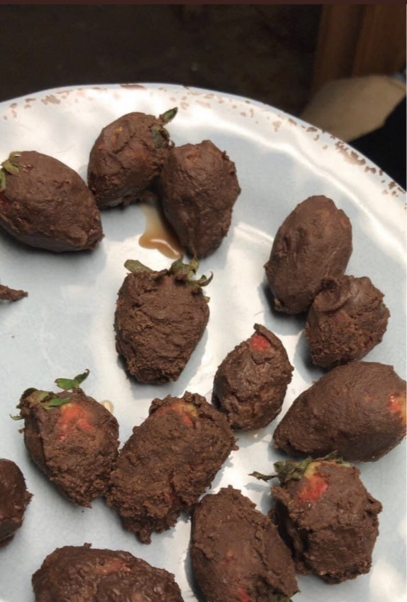

Chocolate Strawberries

Critics Hail This Dish "The Shit"
Have you ever wondered what it feels like to be a world renouned chef? I know I have. I want to show you all a recipe that will have your wife saying "Has Gordon Ramsay been in here?!"
Ingredients
- 100g dark chocolate, roughly chopped
- 400g strawberries
- 30g white and milk chocolate, roughly chopped (optional)
Instructions
- Cut a strip of baking parchment and leave to one side. To melt the chocolate, fill a small pan with 2cm water and bring to a simmer. Put the chocolate in a heatproof bowl and rest it on top of the pan, ensuring the bowl isn’t touching the water. Stir the chocolate to gradually melt it. Or, melt the chocolate in 20 second blasts in the microwave, stirring after each blast until melted. Put the melted chocolate in a small deep bowl.
- Gently hold the strawberries by the leafy top and dip into the chocolate. Tap off any excess chocolate and put on the parchment to set. If you have any leftover chocolate, pour it onto another strip of parchment and leave it to set, it can be used again.
- If you'd like to decorate the strawberries, melt the white and milk chocolate and drizzle lightly over the fruit.